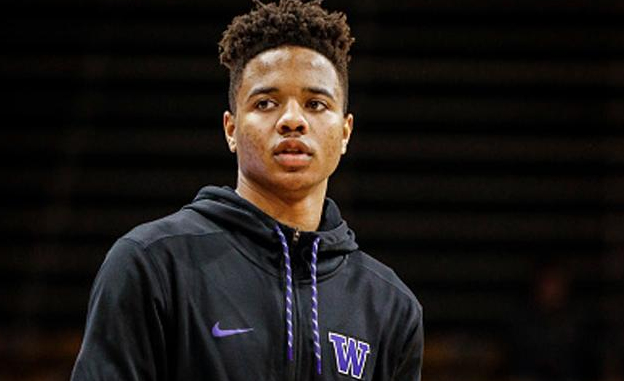

马克尔-富尔茨将于今日为76人试训

北京时间6月18日，今年状元大热、华盛顿大学控卫马克尔-富尔茨将于今日为费城76人试训。而据雅虎沃神报道，这或许将会促使凯尔特人与76人接近完成有关状元签的交易协议。
据沃神透露，凯尔特人与76人商讨的主要内容为费城在送出探花签的同时，还要搭上2018年属于湖人的选秀权以及2021年的潜在首轮签，这样的代价对于费城人来说着实不小。
如若不出意外，天赋异禀的富尔茨几乎已经铁定将在首轮第一顺位被挑走，而手握探花签的76人能够在自己的签位上选到富尔茨的机会其实并不大。据消息源透露，手握榜眼签的洛杉矶湖人也同样对富尔茨有意。